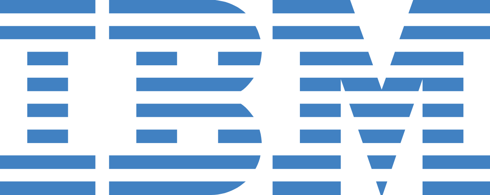

AI with a job to do.
A model might flag an unusual entry. A person still checks why.
See the service approach
ConceptFrom ideas to use 01 / About
A prototype can look good in a lab. At work, it meets old records and decisions that cannot wait.
Explore the technologyWhere to start
Watch someone finish a task. Where do they pause, ask for help or enter the same fact twice?
A line through time
Paul Rand's eight-bar mark dates to 1972. The tools have changed; people still need to find and use the right information.
Sort and count records at scale.
Paul Rand redraws the IBM mark in eight bars.
AI and cloud offer new ways to process and share information.
Working principles
Ideas for this study, not IBM’s stated values.
Watch someone do the work before choosing a tool.
Watch someone do the work before choosing a tool.
Show which record, service or person supplies each answer.
Ask who waits, who pays and who checks the result.
Try the prototype where the work happens.
Bring research, engineering and design to the same review.
Let people report a problem after launch.
The team
Research finds the gap. Engineering checks the limits. Design tests the handoff. Compare notes before building.
Meet the disciplinesIdeas in practice 02 / Technology
A model can flag a missing record. A cloud service can reach an older database. Someone still has to check the result.
Explore the fields
A model might flag an unusual entry. A person still checks why.
See the service approachAn older database still runs the job. New tools need to read it without losing records.
Explore the effectWhere it helps 03 / Impact
A chart before a decision. A forecast before a storm. Both matter when someone has time to act.
A useful test
These are imagined scenarios, not measured IBM projects.
People and work 04 / People & work
A researcher brings evidence. An engineer tests the limits. A designer watches someone try it.
Start a conversationAt the same table
These are roles, not a directory of IBM employees.
Write down what the team does not know. Design a test that could answer it.
Check old data, lost connections and heavy use before launch.
Watch someone complete the task. Remove the step where they get lost.
Find who owns each step and what changes when the tool arrives.
Working together
Show the sketch while there is still time to change it. Let each discipline find a different gap.
From brief to use 05 / Services
Illustrative groups. See IBM for current services.
Watch the task, map the records it touches and agree on what should improve.
Link existing records to the new tool. Avoid asking people to enter the same fact twice.
Notice where people stop or ask for help after launch. Fix that step first.
The handoff
The next team needs to know what was decided, what was built and where people still get stuck.
See the disciplinesNotes from the study 06 / Journal
Four short notes on errors, handoffs and what a system cannot decide.
Featured note / Systems
When a person can see the next step—and knows when to ask for help.
Read the noteThe notes
No notes match that search. Try another word or category.
A system can look complete on a diagram and still leave someone staring at an error. The screen should name the problem, the next step and who can help.
Without those details, a working backend still feels broken.
A form can pass every test and still reject a real address. Leave a way to report the gap and fix it after launch.
The person reporting it should hear what happens next.
Write the question before the test. Record what surprised you, including a result that cuts against the plan.
That result may point to the next experiment.
If a model is unsure, say so on the screen. Keep a person able to review its suggestion.
Do not make confidence look like certainty.
A starting point 07 / Contact
Sending opens your mail app, addressed to the designer.
Want a site like this?magnesium037@outlook.com ↗
Enquiry form
Keep exploring